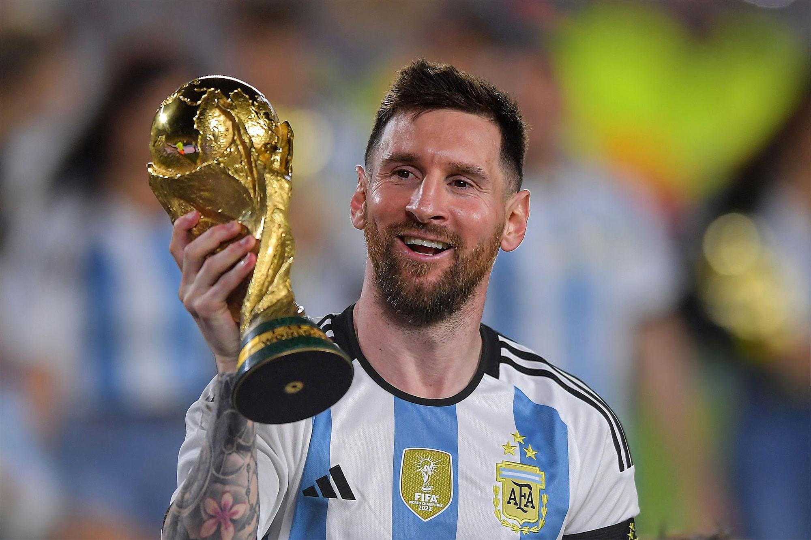
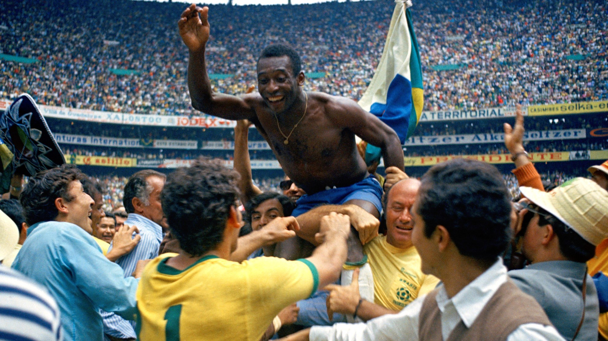
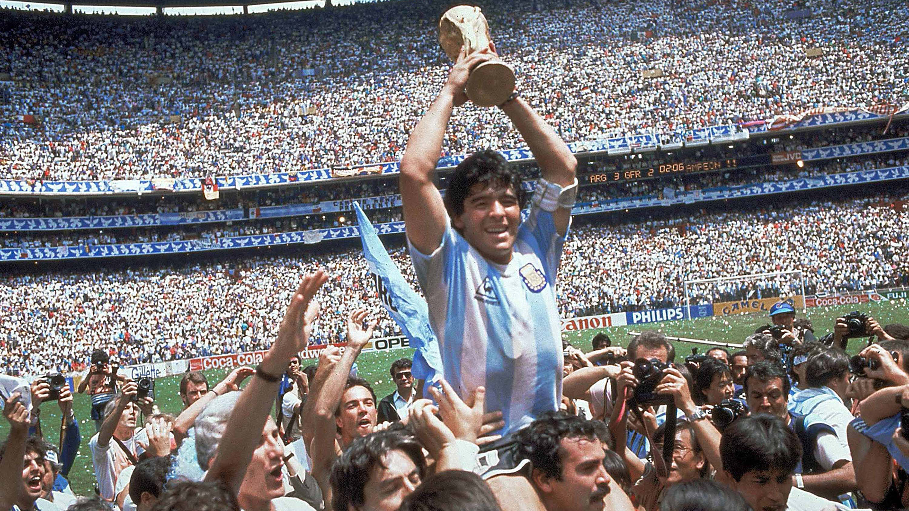

1. LIONEL MESSI

Es un futbolista argentino reconocido por su gran habilidad con el balón, sus regates, pases y capacidad para marcar goles.
Ha ganado numerosos títulos y premios individuales, además de conquistar el Mundial de 2022 con Argentina.
2. PELE

Fue una de las mayores leyendas del fútbol brasileño y mundial. Destacó por su talento, velocidad y capacidad goleadora.
Es el único jugador que ha ganado tres Copas del Mundo, en 1958, 1962 y 1970.
3. DIEGO MARADONA

Fue un futbolista argentino famoso por su extraordinario talento, creatividad y habilidad para regatear a sus rivales.
Su momento más destacado fue el Mundial de 1986, donde lideró a Argentina para conseguir el título.